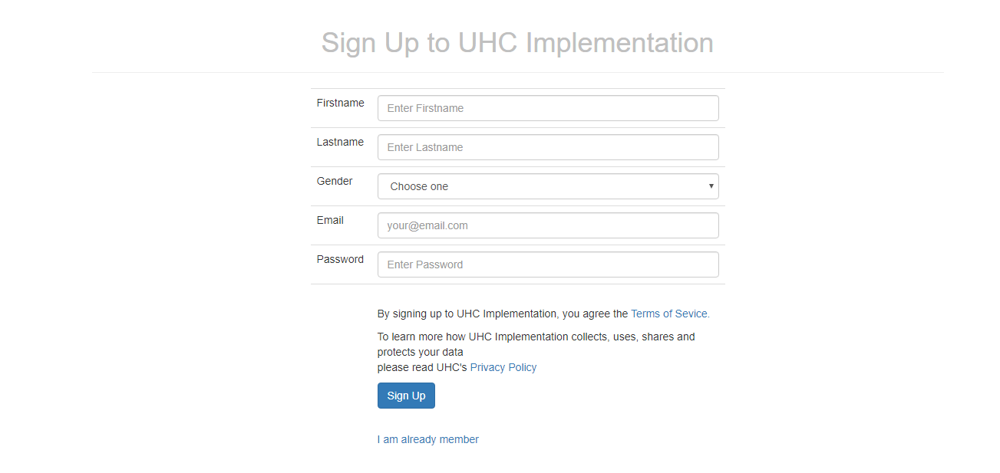

USERS' GUIDE
1.0 login page

You will provide the correct email and password that you registered with, else if not registered you will click sign up button.
2.0 Registration page

If you are a new member to this site you will provide the above data then click sign up button. Then you will go back to log in page.
3.0 Home page
In the home page you will view all events/news by scrolling down the page.
4.0 viewing and dismissing of notification(s)
By clicking on the bell-like icon yo will see your notifications and by clicking cross buttton you will dismis the notification(s). If no notification you will be notified no notification
5.0 like or dislike a post
On each post yo will have freedom to like or dislike that post. Also you will be able to get more details on clicking read more button
6.0 Comments
The full details of the post will be displayed when you click read more; you will be able to leave comments on the comment box provided.
7.0 Quick search
On the search box you will type heading of news then click 'go' .
8.0 Pagination of events
You can use pagenation for quick checking of events.
9.0 Ask question
Ask question by providing required data. On this page you will also see previously asked questions.
10.0 Log out page
When you click the dropdown 'logout' you will have logged out from uhc implementation and it takes you to log in page.